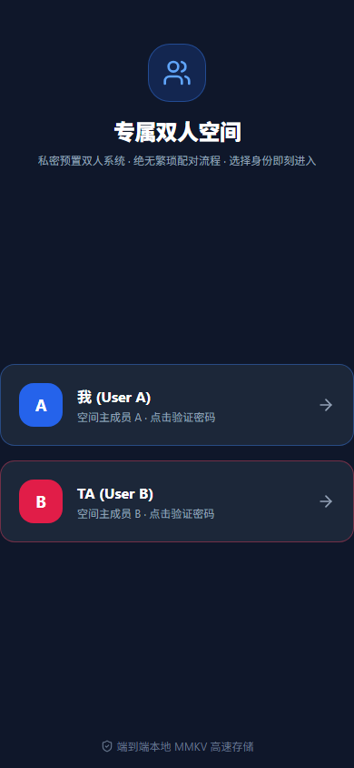
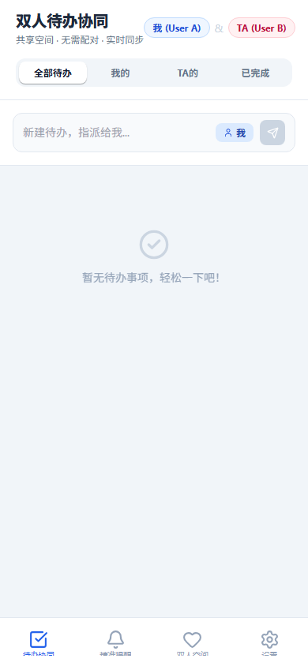
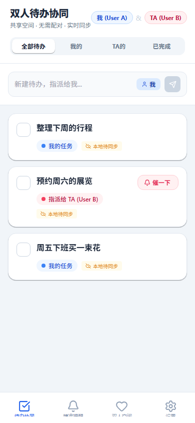
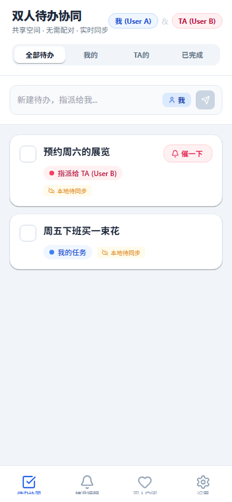
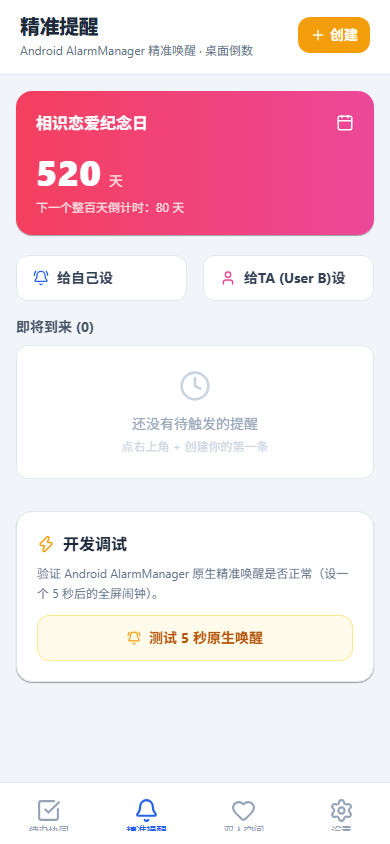
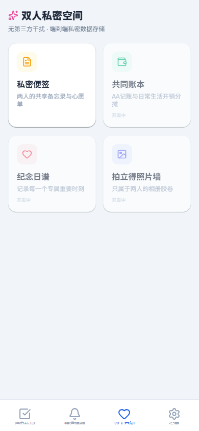
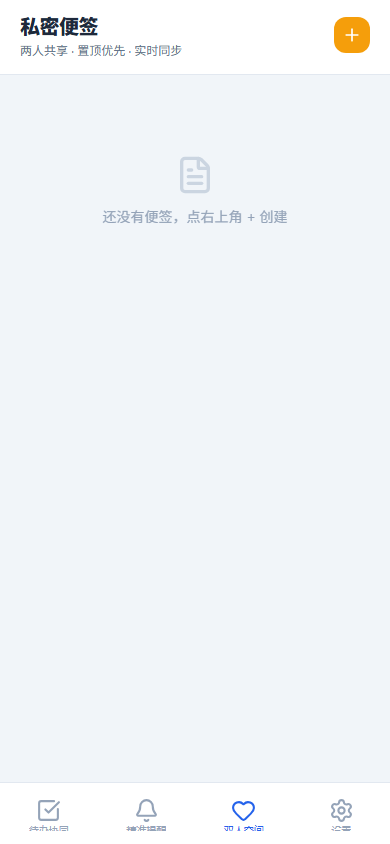
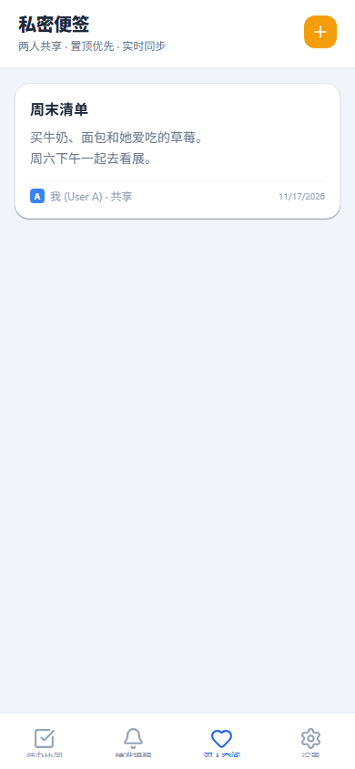
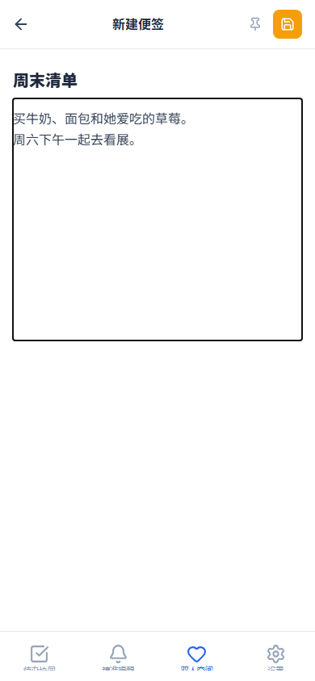
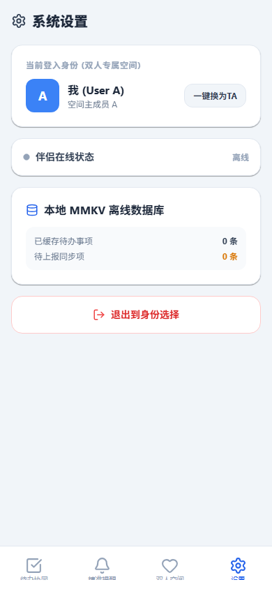

不是把页面做得更满，而是把该看见的留下。用一张纸、一点墨、一处强调色，让待办、提醒和两个人的空间都安静下来；所有原本能做的操作一个不少，并补上几处更顺手的入口。
设计原则（用户原话）：页面要简约大气，不要一些很俗的内容；不要一个页面塞很多内容；原本可操作的内容不要变少，可以变多。
这次不是换皮，而是把「信息密度、颜色噪音、工具感文案」三件事同时收掉。
标题、双人徽章、四个筛选、快捷添加原本堆在顶部约 250px。新版把筛选压成文字下划线，把添加收成一行，首屏多出约 80px 给待办本身。
蓝、玫瑰、琥珀、翠绿同时大面积出现，会显得热闹而廉价。新版以纸白和墨色为主，蓝/玫瑰只保留为 7px 身份点，陶土色只给一个主操作。
「Android AlarmManager」「测试 5 秒原生唤醒」「端到端私密数据存储」这些是工程语言。用户界面只说人话，调试入口移到设置里，能力不丢。
以下均来自本次实际启动后的 Expo Web 页面（390 × 844），没有做美化处理。










标题 + 副标题 + 两枚身份徽章 + 四个筛选 + 快捷添加，占掉首屏近三分之一；待办列表被推到很下面。
蓝、玫瑰、琥珀、翠绿都出现在卡片和徽章上，没有主次；"本地待同步"与"我的任务"视觉权重接近。
三条待办是三张大白卡 + 阴影 + 多枚胶囊徽章，信息被容器切碎，页面显得碎而满。
"Android AlarmManager 精准唤醒""端到端私密数据存储""无需配对"——像内部工具说明，不像两个人的空间。
520 天玫红渐变大卡主导整屏，"即将到来"被压到下方；"开发调试"却又占据正式内容的一整块。
四个等权卡片 + 三个"开发中"标签，缺少留白与节奏；用户感受不到"这是我们的地方"。
两张大卡并排展示 A / B，点一张再输密码；身份在验证前就先被选择，演示感强，也不像正常账号登录。
三种状态都靠同一张大白卡和徽章堆叠，差异只在文字内容；空态又用大图标占位，页面重心随状态漂移。
这一屏不是凭空画的。先把系统真实具备的认证能力说清，再谈界面。
POST /api/auth/login 接收账号（user_a / user_b，也接受对应 UUID）与密码，校验后签发 30 天 JWT；GET /api/auth/me 返回当前身份与 Partner 在线状态。账号来自 .env 的 USER_A_* / USER_B_*，密码支持 bcrypt 或明文比对。
authStore.loginWithBackend() 已调用该接口，并用返回的 user.username 映射为 A / B 身份；isLoggedIn 控制路由守卫，JWT 持久化在 MMKV，退出即清空。也就是说"登录后判断是谁"在代码里已经成立。
没有邮箱 / 手机号字段，没有注册、找回密码、账号管理或多空间；账号是部署时预设的两个。因此登录页不会出现这些入口，避免画出后端做不到的能力。
UserSelectScreen 换成账号 + 密码表单，把输入的账号直接传给 /api/auth/login；登录成功后的身份标识从"用户选择的结果"变成"服务端返回的结果"。后端 .env 固定 UUID 正在接入 PostgreSQL，本设计不依赖数据库状态，登录接口契约不变。| 选择 | 选项 | 影响 |
|---|---|---|
| 账号形态 | A. 沿用 user_a / user_b（或 UUID）；B. 后端增加邮箱 / 手机号字段 | A 本轮即可实现，不碰后端；B 更接近普通 App，但依赖 PostgreSQL 用户表与账号模型改造 |
| 切换身份 | A. 正式界面移除，只保留"退出登录"；B. 开发构建保留快捷切换 | 推荐 A + B：正式包不再出现"一键换为 Partner"，开发包可留调试入口 |
| 会话策略 | A. 默认记住（JWT 30 天，退出清除）；B. 增加"记住我"开关 | A 与现状一致；B 需要在登录页多一个控件并拆分持久化分支 |
| 身份标识 | A. 页头小圆点 + "我的"账号行；B. 页头同时显示昵称 | A 更安静；B 更明确，但会占用头部空间 |
「纸 · 墨 · 一点陶土」：降低饱和面积，提高留白与字号层级，让内容自己说话。
10 张真实截图逐张对应一版重设计，包含空态、有数据、混合态与编辑态；左为现状，右为同一尺寸下的新版。每屏只解决 3–5 个问题，不新增页面层级。另补「新建待办」浮层的形态与三态（见 新建待办）。
登录后进入你们的共享空间。
user.username，前端据此映射当前身份；页面上的身份标识改为登录后的页头小圆点与"我的"账号行。user_a / user_b（或 UUID），接 PostgreSQL 账号表后含义不变。记下一件小事，两个人都能看到。
买菜、取快递，或者周末想去的地方。
想说的话、要买的东西，随手记下。
把日常开销放在一处，不必再算。
把重要的日子，慢慢收进一条时间线。
只留两个人的底片，不对外分享。
想说的话、要买的东西，
都可以写在这里，两个人一起看。
买牛奶、面包和她爱吃的草莓。周六下午一起去看展。
巷口的咖啡、旧书店，还有那家只开晚上的面馆。
只补一个浮层，不改列表页骨架。目标是让"加号 = 新建"成立，同时不削弱原来一行回车就能记下小事的便捷。
第一个 Tab 定名「手记」，同屏承载待办与便签。页名与 Tab 文案统一为同一个配置值；页头改为"眉头时间 + 大字页名"，不再出现第二个"今天"。
页内大标题与底部 Tab 都读同一个 PAGE_NAME = "手记"，定名后只改一处。这个名字同时容得下待办与便签，不偏向"清单"也不偏向"笔记"。
眉头一行「今天 · 11 月 17 日 · 周一」，大字「手记」，右侧身份点与在线状态。时间信息完整保留，页名只出现一次，不与"今天"抢标题。
四档筛选下沉到「待办」小节标题下，不再是全页筛选；便签区不参与筛选。切换筛选只换待办行，便签保持不动，作用域一眼可见。
待办在上、便签在下，按内容自然高度排布，不做 50/50 硬切分；待办最多 4 条、便签最多 2 条，超出折叠。一屏仍只有一个滚动区。
页名变成"手记"之后，原来的大字"今天"必须让位；三种排法里选第一种，时间与名字各占一层。
今天 · 11 月 17 日 · 周一（11px 眉头）
手记（30px 大字）+ 身份点
时间不丢、页名唯一；"今天"仍是最先读到的相对时间，日期与星期补齐绝对信息。
页名只出现在 Tab，页内不写"手记"。最安静，但导航叫手记、页面却没有名字，用户难以把两者对应；品牌感也弱一档。
眉头只留"11 月 17 日 · 周一"，去掉"今天"。更简洁，但丢掉相对时间，用户要先换算日期，日常使用反而多一步。
src/config/pageNaming.ts 导出 PAGE_NAME = "手记"，页内大标题与 MainTabNavigator 的 Tab 文案都读它；眉头时间由日期工具函数生成，不写死。下方稿件中的「手记」与眉头"今天 · 11 月 17 日"即最终形态。| 区块 | 默认显示 | 超出处理 | 去向 |
|---|---|---|---|
| 待办 | 当前筛选下前 4 条 | 列表底部一行「查看全部 N 件 ›」，点击内联展开；再点「收起」回到 4 条 | 不跳页，保留筛选与滚动位置 |
| 最近便签 | 置顶 + 最近更新共 2 条 | 列表末尾通栏按钮「查看全部 N 条便签 ›」；标题右侧另有「+ 写一条」 | 直接打开完整便签列表页；「+ 写一条」直接进新建 |
空态不再用整屏插画，只把对应小节压成一行提示，另一块内容照常显示。
置顶优先，其余按更新时间倒序；标题 + 一行摘要 + 作者与日期。标题右侧「+ 写一条」直接进新建；列表末尾通栏「查看全部 N 条便签」直接打开完整便签列表。
卡片名称与描述不变，状态可补一个数量（如"共享 · 5 条"）；列表右上角「+ 新建」、置顶、删除都保留，与这一页的新建并存。
同一页面的不同状态必须共用骨架，只换内容与状态词；下表是本次逐屏设计的覆盖清单。
| 页面 | 状态 | 设计处理 |
|---|---|---|
| 登录 | 未登录 / 失败 | 账号 + 密码 + 登录；失败在字段下方一行提示，按钮原位显示加载并禁止重复提交 |
| 已登录 | 进入待办；身份标识出现在页头小点与"我的"账号行 | |
| 手记 · 待办区 | 空态 | 计数归零，中央一句引导；头部、筛选、添加三块不动 |
| 有数据 | 全部未完成：无删除线、无同步噪音，每行只留身份点 + 短词 | |
| 混合 | 完成项降一档 + 删除线；待同步与催办只在需要时出现 | |
| 手记 | 待办 + 便签 | 眉头「今天 · 11 月 17 日 · 周一」+ 大字「手记」；待办在上（最多 4 条，超出「查看全部」内联展开）；最近便签在下（最新 2 条，列表末尾「查看全部」进完整列表）；整页单一滚动，不做 50/50 硬切分 |
| 单边为空 | 有便签无待办：待办压成一行提示，快速添加仍在原位；有待办无便签：便签区保留「+ 写一条」与一行提示，不整块消失 | |
| 都为空 | 两个小节各留一行短提示，不用整屏空态插画；加号新建与快速添加仍在首屏 | |
| 新建待办 | 提交前 | 标题 + 可选说明 + 归属；标题为空时主按钮禁用，快速添加行保持可用 |
| 提交中 | 主按钮原位显示"添加中…"并禁止重复提交，面板不关闭、草稿不丢 | |
| 校验失败 | 标题框陶土描边 + 下方一行短句，不弹系统 Alert；网络失败按"待同步"入列 | |
| 提醒 | 空态 | 一行温和提示，不占大卡；倒计时面板保持主视觉 |
| 有数据 | 日期 + 标题 + 身份点一行，行间发丝线，不回到卡片 | |
| 空间 | 可用模块 | "共享"状态词，点击进入对应模块 |
| 筹备中 | 低对比"筹备中"，点击给出敬请期待，入口不消失 | |
| 我的 | 已登录 | 身份只读、账号、同步、开发工具三组；退出登录在底部 |
| 便签 | 空态 | 一句引导 + 右上"+ 新建"，不摆占位卡 |
| 列表 | 连续条目 + 置顶标记；署名与日期保留 | |
| 编辑 / 新建 | 编辑有置顶、删除、保存与脏态；新建无删除，保存默认禁用 |
按「问题 → 现状 → 方案 → 为什么」列出，方便逐条评审或否掉。
| 问题 | 现状 | 方案 | 为什么 |
|---|---|---|---|
| 登录像选角色 | 两张大卡并排展示 A / B，点一张再弹窗输密码 | 单页账号 + 密码 + 登录；身份由服务端返回结果判定 | 登录是验证"你是谁"，不是从名单里挑；也避免演示式切换出现在正式界面 |
| 首屏拥挤 | 顶部约 250px 堆了标题、副标题、双人徽章、四个筛选、快捷添加 | 头部压到约 170px；筛选改文字页签；添加收成一行 | 用户打开应用的第一眼应该看到"今天要做什么"，而不是一堆控制项 |
| 颜色过载 | 蓝、玫瑰、琥珀、翠绿大面积出现，卡片、徽章、按钮各有一套 | 纸白 + 墨色为主；蓝/玫瑰缩成 7px 身份点；陶土只给一个主操作 | 颜色数量决定气质；面积缩小后仍然能区分两个人，但页面安静 |
| 加号语义模糊 | 手记页左侧圆形加号只是行内按钮，与"新建一条待办"的心智不一致 | 点加号打开「新建待办」底部抽屉：标题、可选说明、归属；行内输入保留为"快速添加" | 新建是明确动作，快记是顺手动作；两条路径分开，既有能力不减少 |
| 卡片碎片 | 每条待办一张白卡 + 阴影 + 2–3 枚胶囊 | 连续纸面 + 发丝线分隔；元信息只在需要时出现 | 减少容器重复，信息密度下降，阅读顺序更清楚 |
| 工具感文案 | "Android AlarmManager""端到端私密数据存储""无需配对"直接出现在页头 | 换成"不错过两个人的小事""只属于你们的地方"；技术说明移到设置 | 这是两个人的生活应用，不是开发者面板 |
| 提醒页失衡 | 520 天渐变大卡占据主视觉，"开发调试"占一整块 | 安静倒计时面板 + 即将到来列表；调试移入"我的 › 开发工具" | 保留纪念日的仪式感，同时让"即将到来"回到主流程 |
| 空间像菜单 | 四个等权卡片 + 三个"开发中"标签 | 统一线性图标、低对比"筹备中"、加大留白 | 空间页应该让人想停留，而不是像功能清单 |
| 状态无差异 | 空态 / 有数据 / 混合态都靠同一张白卡与徽章，差异只在文字 | 共用骨架，只让列表区与状态词分级；空态用一句引导 | 状态变化时入口不移动，用户不用重新找操作 |
| 便签编辑层级弱 | 返回、置顶、删除、保存四个图标等权挤在头部，标题与正文同权重 | 保存升为主操作，删除降噪，标题与正文分级，底部显示脏态与字数 | 编辑页首先服务于写作，其次才是操作 |
| 称呼统一 | 旧文案混用不同称谓与身份缩写 | 一律用 Partner（英文词直接嵌入中文），集中到一处文案配置 | 中文界面没有英文语言选项，Partner 作为固定称谓；中英文相邻处统一留空格 |
| 第一个 Tab 只承载待办 | Tab 叫"待办"，便签只能进空间找 | Tab 改名「手记」（与页内大标题同源），页头大字换成「手记」，同屏增加"最近便签"摘要列表与「查看全部」按钮 | 打开应用先看到今天要做什么，也能一眼看到对方最近写了什么；不新增页面层级，也不做第五个 Tab |
| 筛选像全局 | 四档筛选紧贴页头，看起来像整页过滤 | 筛选收进「待办」小节标题下，只作用于待办 | 加入便签后必须说清作用域，避免用户以为切到"Partner"会把便签也筛掉 |
| 便签入口分散 | 只有空间里能找到便签 | 这一页加"最近便签"摘要、列表末尾「查看全部」与「+ 写一条」；空间入口保留且同样可新建 | 两边都能看、都能写，是刻意保留的重复，不再区分主入口 |
| 底部导航命名 | 待办 / 提醒 / 空间 / 我的；四项小图标 + 小字，"双人空间"用爱心图标 | 手记 / 提醒 / 空间 / 我的（其余三项不动），第一个 Tab 与页内大标题共用 PAGE_NAME | 页面已不只装待办；改名只动一处配置；统一线性图标，选中用墨色 |
原则是"原本可操作的内容不要变少，可以变多"。逐项核对如下。
| 能力 | 当前入口 | 新版入口 | 状态 |
|---|---|---|---|
| 创建待办 | 手记页快捷添加 | 加号打开「新建待办」面板；行内"快速添加"（回车/发送）保留 | 保留并增强 |
| 指派给自己 / Partner | 添加区切换胶囊 | 新建面板归属选择 + 快速添加行内胶囊 | 保留 |
| 填写补充说明 | 无 | 新建面板「补充说明 · 可选」 | 新增 |
| 四种筛选 | 四个分段胶囊 | 四个文字页签（带数量） | 保留并增强 |
| 勾选完成 | 左侧方形复选框 | 左侧圆形复选框 | 保留 |
| 催办 Partner | 「催一下」按钮（仅 Partner 的任务） | Partner 的任务右侧"提醒"文字操作 | 保留 |
| 查看同步状态 | 琥珀色"本地待同步"胶囊 | 元信息里的"待同步"短词 | 保留 |
| 查看最近便签 | 无（只能进空间便签列表） | 这一页「最近便签」摘要列表，最新 2 条，条目可进编辑 | 新增 |
| 进入全部便签 | 空间 › 便签卡片 | 空间卡片保留；这一页便签列表末尾「查看全部 N 条便签」直接进完整便签列表页 | 保留并增强 |
| 待办折叠 / 展开 | 列表一直向下滚动 | 这一页默认 4 条 + 「查看全部 N 件」内联展开，不跳页 | 保留（不减少） |
| 新建 / 编辑便签 | 右上角加号、卡片进入 | 这一页便签区「+ 写一条」与空间列表「+ 新建」并存；条目点击仍走现有编辑页 | 保留并新增 |
| 置顶便签 | 编辑页置顶按钮 | 编辑页置顶胶囊 + 列表"置顶"标记 | 保留并增强 |
| 删除便签 | 编辑页垃圾桶图标 | 编辑页"删除"文字（二次确认） | 保留 |
| 未保存离开提示 | 编辑页系统弹窗 | 保留同样的提示 | 保留 |
| 查看保存状态与字数 | 无 | 编辑页底部"已修改 / 已保存"与字数 | 新增 |
| 创建提醒 | 右上角"+ 创建" | 右上角"+ 新建" | 保留 |
| 给自己设 / 给 Partner 设 | 两个大按钮 | 两个轻按钮（身份点区分） | 保留 |
| 原生闹钟测试 | 提醒页"开发调试"卡片 | "我的 › 开发工具" | 迁移，能力保留 |
| 账号密码登录 | 两张身份卡 → 密码弹窗 | 单页账号 + 密码 + 登录 | 保留（入口简化） |
| 登录后识别身份 | 由所选卡片决定（验证前） | 由后端返回 user.username 决定（验证后） | 保留并修正 |
| 切换身份（演示） | 设置页"一键换为 Partner" | 移除；退出登录后用另一账号登录 | 按本次要求移除 |
| 查看在线 / 缓存 / 待同步 | 设置页三行 | "我的 › 同步"三行 | 保留 |
| 退出登录 | "退出到身份选择" | "我的"页底部"退出登录" | 保留 |
| 进入四个空间模块 | 四张卡片 | 四张卡片（筹备中状态更轻） | 保留 |
本轮只出设计稿，没有修改任何前端代码，也没有提交。
先改设计 Token 与导航命名，再逐屏替换；每屏单独提交，便于回滚与对比。
src/config/pageNaming.ts（新增，PAGE_NAME 一处配置）、Tailwind Token、MainTabNavigator.tsx（Tab 文案读 PAGE_NAME）、TodosScreen.tsx（页内标题读 PAGE_NAME + 最近便签摘要）、SpaceScreen.tsx（便签卡数量）、NotesListScreen.tsx（从这一页直接进入）、NoteEditScreen.tsx、TodoCard.tsx、RemindersScreen.tsx、SettingsScreen.tsx。不改数据层。
页头按方案 A（眉头保留「今天 · 11 月 17 日 · 周一」、大字「手记」）是否可行；待办 4 条 / 便签 2 条的折叠阈值是否合适；空间便签卡是否补"共享 · N 条"。
/api/auth/login 与 authStore。本设计稿只描述视觉与信息层级。真实截图中的"本地待同步"是后端无数据库时的降级状态，正式环境接上 PostgreSQL 后会消失。docs/ui/proposal/ui-proposal.html。截图位于 docs/ui/current/screenshots/。